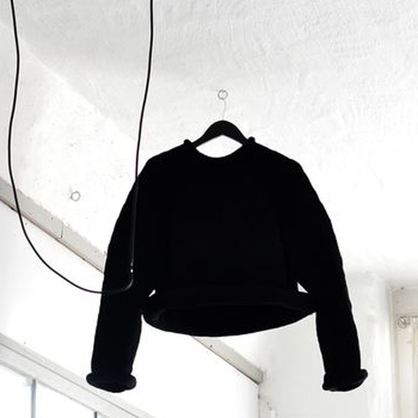
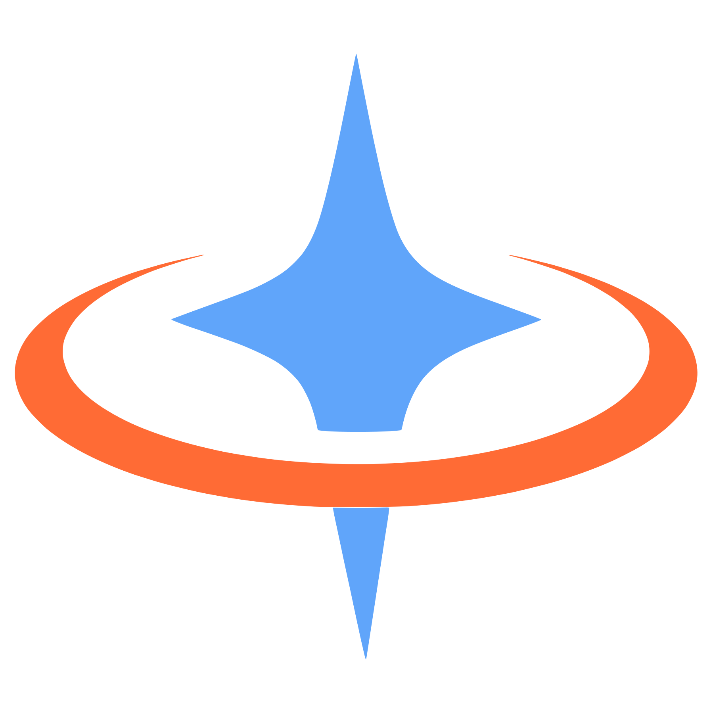

Katalog bağlamlı müşteri iletişimi
Mağazanı bilen yapay zekâ, müşterine doğru cevabı verir.
İkas mağazanı bağla, kataloğunu senkronize et. Kozmopath ürün sorularını katalog bağlamıyla yanıtlar; gerektiğinde ekibin devralır.
Deneme süren hesabın oluşturulduğunda başlar. Kredi kartı gerekmez.
Kontrollü demo verisi · gerçek müşteri kaydı değildir
Katalog ürünleri1 ürün
Gerektiğinde konuşma ekibe devredilir
01 · Katalog bağlamı
Bir ürün sorusu, arama kutusundan fazlasıdır.
Kozmopath müşterinin doğal dilini yapılandırılmış katalog adaylarıyla buluşturur. Yanıtı doğal kurar; ürün adı, stok ve bağlantı gibi somut alanları katalog sonucundan alır.
Ürün gerçeği katalogdan, anlatım konuşmanın bağlamından gelir.
Kontrollü demo verisi · gerçek müşteri kaydı değildir
- 01Müşteri niyeti“Siyah, bisiklet yaka ve stokta bir sweatshirt arıyorum.”Doğal dil
- 02Katalog aramasıUygun ürün adayları ve stok bilgisiYapılandırılmış
- 03Kozmopath yanıtı“Siyah bisiklet yaka sweatshirt seçeneğimiz stokta.”Konuşmaya uygun
İsimFiyatStokÜrün bağlantısı
02 · Nasıl çalışır?
Mağazadan yanıta dört net adım.
İkas bağlantısından katalog yanıtına ve insan devrine uzanan çalışma modeli dört net adımdan oluşur.
- 01
İkas’ı bağla
Mağaza bağlantısını kur ve Kozmopath’ın kullanacağı katalog kaynağını tanımla.
Bağlantı - 02
Kataloğu hazırla
Görsel ve ürün bilgisi içeren katalog senkronizasyonunun tamamlanmasını bekle.
Senkronizasyon - 03
Bağlamla yanıtla
Ürün sorularını katalog adaylarıyla değerlendir; karşılaştır ve doğal dille yanıtla.
Katalog araması - 04
Ekibe devret
İnsan kararı gerektiğinde konuşmayı müşteri mesajı ve özel notla ekibe aç.
İnsan devri
Kullanılabilir araçlar hesap ayarına, katalog hazırlığına ve kanal desteğine göre çalışır.
03 · Ürün sunumu
Ürünü yalnız tarif etmez, gösterir.
Uygun katalog hazır olduğunda müşteri, konuşmanın içinde ürün kartlarını veya tek ürünün görsel galerisini görebilir.
catalog_products01 · Ürün anatomisi
Siyah Bisiklet Yaka Sweatshirt
Siyah · Referans fiyat: 1.249 TL
- product_id
- Ürün kimliği
- image_url
- Ana görsel
- price
- Referans fiyat
- product_url
- Ürün bağlantısı
presentation02 · Sunum biçimleri
- 1–3Farklı ürünHer ürün için ana görsel
- ≤3Tek ürün görseliTek ürün galerisi
- →Devamını gösterGösterileni tekrarlamadan
Sunum biçimi, hazır katalog sonucuna ve desteklenen müşteri yüzeyine göre seçilir.
Kontrollü demo verisi · gerçek müşteri kaydı değildirGörsel + alanlar + sunum sınırı
04 · Desteklenen kanallar
Web, WhatsApp ve Instagram; tek merkez, doğru kanal sınırı.
Web sitesi, WhatsApp ve Instagram gelen kutularını bağla. Katalog görselleri ve doğrulanmış seçenekler Web sitesi ile WhatsApp’ta sunulur; Instagram mesaj akışı bağlı gelen kutusunda, API ise metin yanıtıyla çalışır.
Kanal bağlantısı ile görsel katalog yeteneği aynı şey değildir; her yüzey kendi doğrulanmış biçimini kullanır.
01İkas katalog sinyali
StoktaSiyah Bisiklet Yaka SweatshirtÜrün kimliği · görsel · fiyat · bağlantı

02 · Kozmopath yanıt yönlendiriciTek katalog bağlamı, kanalına göre doğru biçim.- Ürünü doğrula
- Kanalı tanı
- Biçimi sınırla
03AZengin ürün yanıtı
Ürün görseli ve doğrulanmış seçimler yalnız desteklenen müşteri yüzeyine gider.
WWeb sitesiGörsel ürün · seçenek＋WAWhatsAppGörsel ürün · seçenek
03B · Bağlı gelen kutusuInstagram mesajı
BağlıMesaj alma ve yanıtlama; burada zengin katalog kartı sözü yok.
03C · Metin yüzeyiAPI yanıtı
MetinDoğal metin; görsel ürün kartı gibi gösterilmez.
i Zengin katalog sunumu Web sitesi ve WhatsApp ile sınırlıdır; Instagram için burada yalnızca doğrulanmış bağlantı ve mesajlaşma yeteneği anlatılır.
05 · İnsan devri
Gerektiğinde yapay zekâ durur, ekip bağlamıyla devam eder.
Devir, konuşmayı insan için açabilir; müşteriye görünür bir mesaj ve ekip için ayrı bir özel not taşıyabilir.
- ✓ Konuşma insan yanıtına açılır
- ✓ Müşteriye devir mesajı gösterilebilir
- ✓ Özel not müşteri içeriğinden ayrılır
01Müşteri mesajı + gösterilen ürün02Devir nedeni · ek beden sorusu03Sahiplik · ekip devralıyor04Kuyruk · insan yanıtı bekleniyor
AYAyşe YılmazWeb sitesi · Ürün sorusu Konuşma açık
Kontrollü demo verisi · gerçek müşteri kaydı değildir
↳Konuşma ekibe devredildiİnsan yanıtı bekleniyor
Yanıt yaz…
↳Aynı konuşma açık kalır
Müşteriye görünür devir mesajı ile ekip içindeki özel not ayrıdır; insan yanıtı taşınan konuşma bağlamıyla sürer.
06 · Kontrol katmanı
Kontrol, ürün deneyiminin parçası.
Kozmopath’ın çalışma sınırları, konuşma akışının içinde görünür ve doğrulanabilir davranışlara dayanır.
Canlı yanıt yoluBir müşteri turu4 sınır görünür
- 01Soru
- 02Katalog araması
- 03Doğrulama
- 04Yanıt veya devir
Katalog bağlamı
Somut ürün alanları ve müşteri bağlantıları, güncel araç sonucundaki doğrulanmış adaylarla sınırlıdır.
Sınırlı araç bütçesi
Model ve araç adımları, müşteri turu başına tanımlı çağrı ve iterasyon sınırlarıyla çalışır.
Güncel seçim
Eski veya çakışan seçenek gönderimleri reddedilir; yeni müşteri mesajı önceki seçimi geçersiz kılabilir.
Görsel yoksa metin
Katalog görseli hazırlanamazsa akış, doğrulanmış ürün metni veya bağlantısına geri dönebilir.
✓ Her sınır, müşteriye gösterilen sonuçtan önce aynı yanıt yolunda uygulanır.
Kozmopath × İkas
Ürün sorusunu, katalog bağlamlı bir konuşmaya dönüştür.
Katalog bağlamlı yanıtWeb sitesi ve WhatsApp ürün sunumuGerektiğinde insan devri
Deneme süren hesabın oluşturulduğunda başlar. Kredi kartı gerekmez.